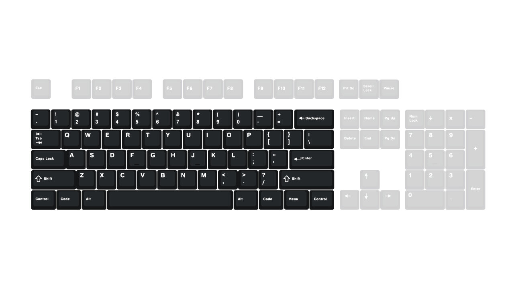

Why have different layouts?
There are a couple of reasons to change the layout of your keyboard. One reason is because if there are keys you don't use, then you can get rid of them and free up desk space. Another reason is because changing it will make look nicer. Different layouts are often just a keyboard with a different number of keys on it or have a different shape. You can mix and match some of the keyboard layouts on here to make your ideal keyboard
100% Keyboard
This is a standard keyboard; one you will usually get if you buy a new PC. It comes with a numpad, F key row and arrow keys. This is also referred to as a full-sized keyboard.
Tenkeyless Keyboard
This is the same as the full-sized keyboard but with the numpad removed. A more compressed version of this keyboard is used on Apple MacBooks.
75% Keyboard

A Tenkeyless Keyboard but with the keys in a compressed manner. Sometimes they will remove the window and Fn keys removed.
65% Keyboard

This keyboard removes the F row and numpad but adds back the window and Fn key.
60% Keyboard

This keyboard removes the F row, numpad and arrow keys. This is where the keyboard starts to fully become a brick.
40% Keyboard
This keyboard removes the arrow keys, F row and numpad. In order to access these keys, you must press certain keys which will reveal another layer(not on the physical keyboard) that can access these keys.
Ortholinear

On a normal keyboard, keys are staggered and not completely aligned. This is because typewriters were staggered in order for the keys to not jam when people were typing and when keyboards were invented they just copied the design in order to make the transition easier. However, some people prefer to have the keys aligned because it's more comfortable. Unfortunately, it kind of looks like a brick.
Split

Split keyboard cut the keyboard in half and separate the keys. Sometimes they are on one board and sometimes they two boards.